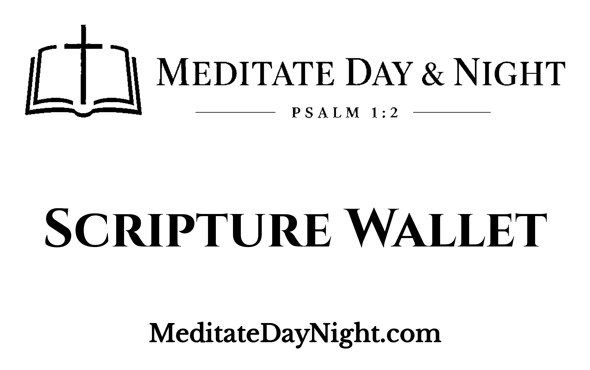
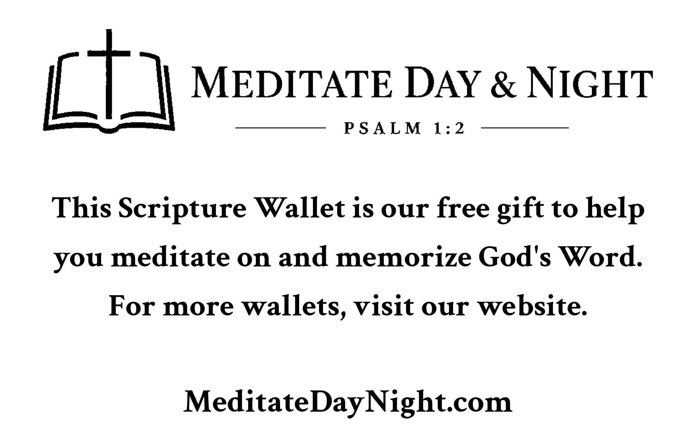

Assisting and encouraging people to meditate on and memorize the Word of God
Meditate Day & Night
Welcome. Many visitors find MeditateDayNight.com because they received a Scripture Wallet — a pocket set of King James Bible verses to carry, read, and memorize. Whether you came that way or found us another way, this site is here to help you meditate on God’s Word.
How the Bible tells us to meditate on the Word of God
God’s Word itself calls us to keep Scripture in our mouths, our hearts, and our daily walk — day and night. Below are passages from the King James Version that speak to meditating on, hearing, hiding, and living by the Word.
“This book of the law shall not depart out of thy mouth; but thou shalt meditate therein day and night, that thou mayest observe to do according to all that is written therein: for then thou shalt make thy way prosperous, and then thou shalt have good success.”Joshua 1:8 (KJV)
“But his delight is in the law of the LORD; and in his law doth he meditate day and night.”Psalm 1:2 (KJV)
“But he answered and said, It is written, Man shall not live by bread alone, but by every word that proceedeth out of the mouth of God.”Matthew 4:4 (KJV)
The Word is life and health
“My son, attend to my words; incline thine ear unto my sayings. Let them not depart from thine eyes; keep them in the midst of thine heart. For they are life unto those that find them, and health to all their flesh.”Proverbs 4:20–22 (KJV)
Hide the Word in your heart
“Thy word have I hid in mine heart, that I might not sin against thee.”Psalm 119:11 (KJV)
“O how love I thy law! it is my meditation all the day. Thou through thy commandments hast made me wiser than mine enemies: for they are ever with me. I have more understanding than all my teachers: for thy testimonies are my meditation.”Psalm 119:97–99 (KJV)
“Thy word is a lamp unto my feet, and a light unto my path.”Psalm 119:105 (KJV)
“The entrance of thy words giveth light; it giveth understanding unto the simple.”Psalm 119:130 (KJV)
Wisdom from God’s Word
“For the LORD giveth wisdom: out of his mouth cometh knowledge and understanding.”Proverbs 2:6 (KJV)
“If any of you lack wisdom, let him ask of God, that giveth to all men liberally, and upbraideth not; and it shall be given him.”James 1:5 (KJV)
The living Word
“For the word of God is quick, and powerful, and sharper than any twoedged sword, piercing even to the dividing asunder of soul and spirit, and of the joints and marrow, and is a discerner of the thoughts and intents of the heart.”Hebrews 4:12 (KJV)
“Let the word of Christ dwell in you richly in all wisdom; teaching and admonishing one another in psalms and hymns and spiritual songs, singing with grace in your hearts to the Lord.”Colossians 3:16 (KJV)
“So then faith cometh by hearing, and hearing by the word of God.”Romans 10:17 (KJV)
“Great peace have they which love thy law: and nothing shall offend them.”Psalm 119:165 (KJV)
A simple way to keep the Word close
The Scripture Wallet is a set of wallet-sized cards (about 86 × 54 mm) with one King James verse on each side. Carry it, read a card each day, flip it when you have memorized that side, and keep meditating on God’s Word.
We give Scripture Wallets away free of charge. You may also download the card images and print your own.
We only give away and publish the King James Version on this ministry site.

Front cover

Back plate